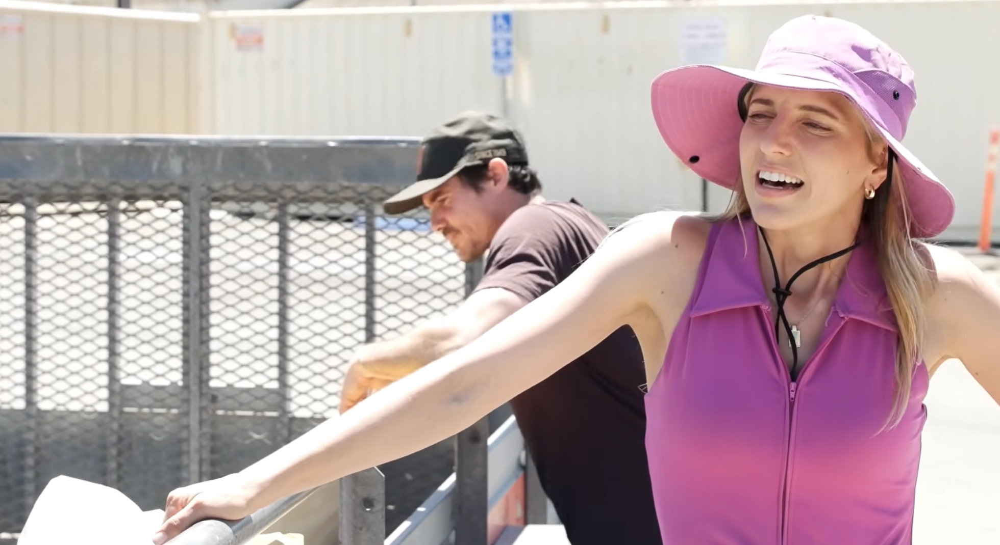
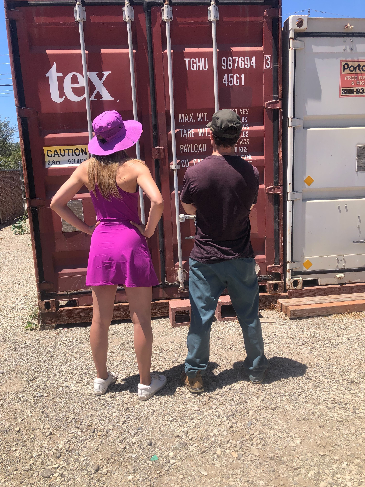

The Director on the Rom-Com
August 2026

SD: But at least it was a shit show behind the scenes, right? That's a sacred staple.
SC: We are creators, you dont build things without destroying other things.
SD: Favorite scene.
SC: The 7/11. Her giant pink water cup filled with sparkling water juxtaposed next to his Big Gulp soda. Thats literature man. Symbolism. Men-from-Mars Women-from-Venus in a frame. Then she goes to the bathroom and hes all upset. Thats the movie.
SD: Rom-com for Canada.
SC: We didnt forget Canada, we are just going for a different segment of it. This is for the fans at the hockey game who dont yell for blood. But its not a rom-com.
SD: Do you have another film coming, will there be a dog.
SC: Yes. A big one. The working logline is: 'An embattled father on Halloween night must get his dog to take a dump.' Titled Sunny, take a dump!
SD: So standards back next issue.
SC: We arent in the business of making movies without sheets and without people losing limbs. We dont know the plot, but we do know a dog takes a dump and a head gets ripped off. How they come together is still to be understood.
SD: Final word.
SC: If you are a fish, stay in the water.
— SD
Shane Campbell on the record about what happens when you give FHBP a fish-out-of-water genre and two days to shoot, which is a rom-com without rom or com. Some say this movie is just a lesson in driving, as half the dialog is about speeding in a 25 mph zone. Sean Dog gets to the bottom of it in this issue.
SD: This is a rom-com.
SC: Its not a rom-com. Ive said this 100 times. Its a fish-out-of-water movie, a buddy pic at worst. Because there is no romance in it.
SD: It is 90% a waitress talking.
SC: Thats because Marcos is bitching the entire time and has road rage issues. That is the comedy.
SD: Why rom-com?
SC: Its not. The assigned genre was fish out of water. I dont know what to tell our fans. If they assign us a genre that isnt horror we have to do that genre. We cant always be blood and guts, kicking ass and taking names in the horror genre.
SD: Well, explain how it's a fish out of water?
SC: The guy in the truck is the land. The waitress in the truck is the fish. And the truck is the land. And so then I guess the guy is a land animal, the girl a fish. Better, the truck is land, guy is mammal, girl is fish.
SD: Where were the sheets.
SC: On my bed. Which may have thrown me off. I have never made a movie and slept in a bed in the same 48-hr period. I think that is what gives FHBP that texture you dont see in other films. The reason is this time we had no set. Just a truck.
SD: Why the 25 mph zone.
SC: The number 25 was the prompt, so we went with it.

SD: Hand-held.
SC: Baby is all gass no brakes, so we are always filming hand-held. We dont use tripods unless its lunch time and need a place to put down the camera. But to your point, this was the first time we ran around the city with no plan and no formal set. Hand-held is the only way a 48 works with no set.
SD: This film was such a departure.
SC: I know. The dog sheets. No blood. Thats half the standards. We are on a watch list. But Thats the deal, you cant say you are indie if every shoot is the same shoot.